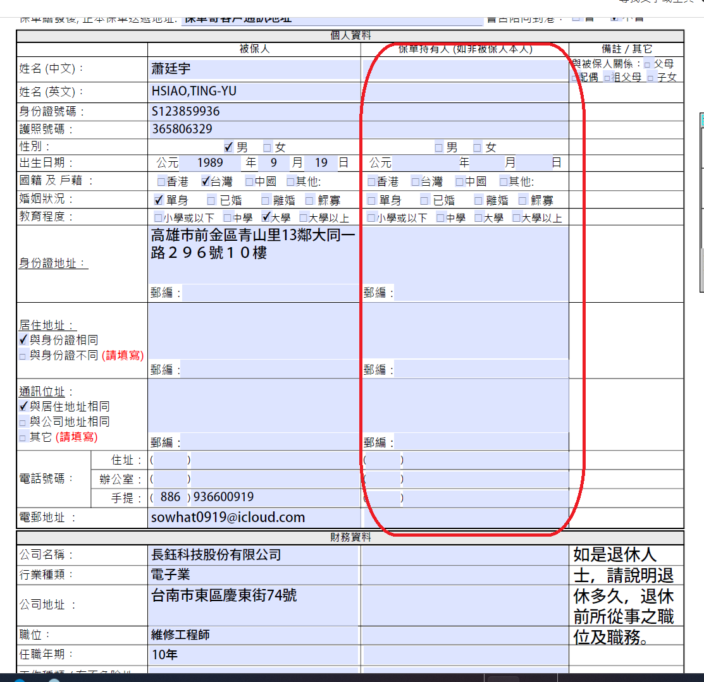
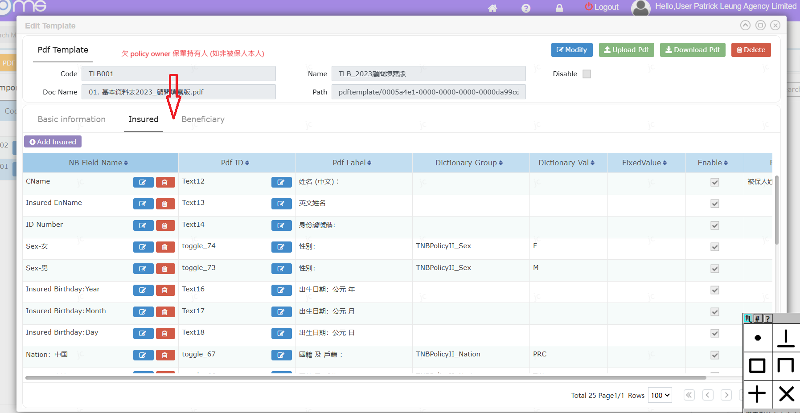
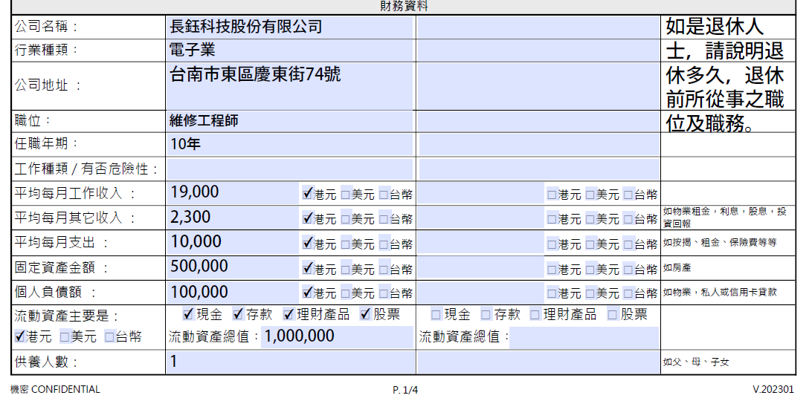
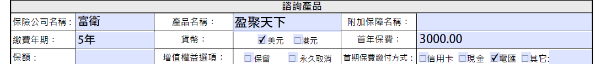

17/July/2025
1. 在
NB
匯入過程中，應支援以模糊查詢保險公司名稱及產品名稱，產品名稱亦需支援模糊查詢（like
%%）以匹配中間字詞。
During
NB import, allow users to search insurance company and product name
by partial phrase. Product name should also support partial match
(like %% for mid-string matching).
2. 支援上傳
JPG/PNG 圖片並自動轉為
PDF。
Support
uploading JPG/PNG images and auto-converting to PDF.
3. 新增
email 發送模板的
folder，預設發送者為
nb@pla.hk，並希望不同 folder
可設定不同的 email 發送者。
Add
a new email sending folder in the template. Default sender is
nb@pla.hk. Different folders should support different sender emails.
4. 新增
5 個
email 模板，編號為
14–18。
Add
five new email templates numbered 14–18.
JC 會再提供
5. JC
需回覆目前處理狀態（是否以
email 發送或接收來更新狀態）。
JC
to confirm how status updates (whether by email sent or received).
6.
保單查詢介面應新增「到期日（expiry
date）」作為搜尋條件。
Add
'expiry date' as a searchable field in the policy search interface.
7. JC
提出：PDF
導入時，Insured（被保人）欄位出現，但遺漏了
policy owner（保單持有人）欄位。
JC
raised that when importing PDFs, the 'Insured' fields appear, but the
'Policy Owner' fields are missing.


8. 部分
PDF 匯入時，缺少
Finance（財務）欄位。
The
Finance section is missing in some PDF imports.

9. PDF
最底部應有 coverage（保障內容/產品）欄位，目前遺漏。
The
coverage (product) section at the bottom of the PDF is missing.

10. JC
須更新兩份 2025
年版的 PDF
模板：一般版本及百慕達版本。
JC
needs to update two 2025 PDF templates: one general version and one
Bermuda version.